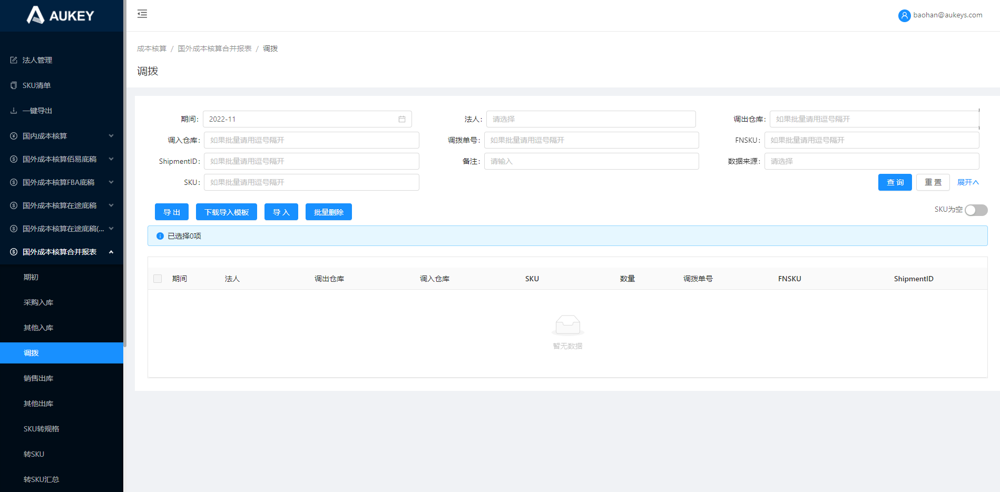

原需求：https://svn.aukeyit.com/svn/Code/aukey-erp/【1】信息技术部软件资产知识库/【7】业财平台/【1】产品资料/成本核算 国外成本核算-合并报表.rp
现需求：
1.数据源：【在途底稿（新）/调拨】；
2.按钮控制说明：
2.1【拉取在途底稿数据】：2.1.1拉取【在途底稿（新）/调拨】页面数据；
2.1.2范围：【法人管理】页面，【法人类型】=“国外法人”且【模块类型】=“合并报表”的对应法人当前期间数据；
2.1.3注：拉取后，【调出仓库】【调入仓库】字段值=“在途”的，需改为 类型2-类型1-“在途”，其他与【在途底稿（新）/调拨】保持一致；
2.2【导出】【批量删除】：逻辑不变；
2.3【下载导入模板】【导入】：导入模板样式参考【在途底稿（新）/调拨】（删除最后一行提示与字段标黄颜色）——导入后默认赋值为合并报表-手工录入；

拉取在途底稿数据